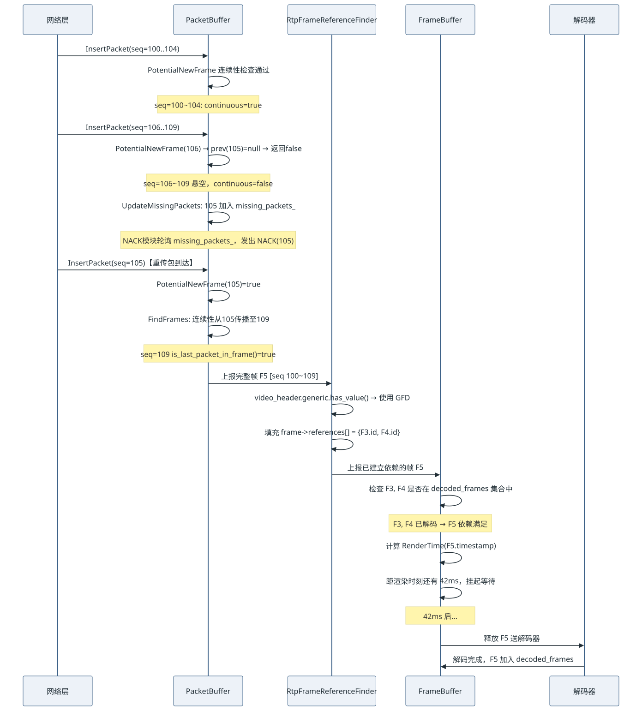

- 01PacketBuffer按 seq 连续性组帧
- 02ReferenceFinder推断帧依赖
- 03FrameBuffer依赖与时序调度
本文立足 WebRTC 主线源码（
modules/video_coding），以实际工程代码为锚点，完整追踪一个视频 RTP 包从 UDP 套接字抵达，到最终被解码器消费的全链路。目标读者：已熟悉 RTP/RTCP 协议栈、正在调试卡顿/延迟问题的音视频基础设施工程师。
问题陈述：打破"JitterBuffer = 环形队列"的错觉
绝大多数关于视频 JitterBuffer 的基础描述，会给工程师留下一个错误的心智模型：
接收到 RTP 包 → 按序号排进一个环形缓冲区 → 等到帧的所有包到齐 → 送给解码器
这个模型在三个关键维度上是错的：
- 组帧不是等"包到齐"：判断一组包是否构成完整帧，依赖
is_first_packet_in_frame/is_last_packet_in_frame标记位以及seq连续性检查，而非"等待某个包数"。 - 帧组装完整 ≠ 帧可解码：P 帧的依赖关系（references）必须由
RtpFrameReferenceFinder单独建立，未满足依赖的完整帧仍不能放行。 - 缓冲时间不是固定值：目标延迟（Target Delay）由
JitterEstimator通过卡尔曼滤波实时估算，随网络抖动动态调整，最小1ms，上界10s，不是你在配置文件里写一个常量。
真实的视频接收侧是一条三级流水线：
查看图解源文本
flowchart LR
A[UDP/RTP 包] --> B["① PacketBuffer\n(组帧引擎)"]
B --> C["② RtpFrameReferenceFinder\n(依赖解析引擎)"]
C --> D["③ FrameBuffer\n(时序调度引擎)"]
D --> E[解码器]
style B fill:#1a3a5c,color:#e0e0e0
style C fill:#1a4a3a,color:#e0e0e0
style D fill:#4a2a1a,color:#e0e0e0
| 级别 | 模块 | 解决的核心问题 |
|---|---|---|
| ① | PacketBuffer |
RTP 包乱序到达，判断"一帧的所有包都到齐且连续" |
| ② | RtpFrameReferenceFinder |
已组帧的帧，确定其在 I/P/B 依赖图中的位置 |
| ③ | FrameBuffer |
依赖满足的帧，以正确的时间窗口出队送解码器 |
第一级：PacketBuffer — 以 seq 连续性为基础的组帧引擎
1.1 数据结构与核心设计决策
PacketBuffer 的实现文件为 modules/video_coding/packet_buffer.cc。
它是一个动态扩容的环形数组，初始容量 512，最大容量 2048（均为 2 的幂次），以 seq_num % buffer_.size() 作为哈希索引：
// packet_buffer.cc — 构造函数
PacketBuffer::PacketBuffer(size_t start_buffer_size, size_t max_buffer_size)
: max_size_(max_buffer_size),
first_seq_num_(0),
first_packet_received_(false),
is_cleared_to_first_seq_num_(false),
buffer_(start_buffer_size), // std::vector<unique_ptr<Packet>>
sps_pps_idr_is_h264_keyframe_(false) {
// 容量必须是 2 的幂次，以支持位运算取模
RTC_DCHECK((start_buffer_size & (start_buffer_size - 1)) == 0);
RTC_DCHECK((max_buffer_size & (max_buffer_size - 1)) == 0);
}
设计决策：使用 2 的幂次容量的动态扩容数组，而非固定大小环形队列。当缓冲区冲突（哈希碰撞）时，先尝试扩容至 2 倍；若已达
max_size_且仍冲突，执行Clear()并向上层发出buffer_cleared = true信号，触发关键帧请求（PLI/FIR）。这是一种以 PLI 换内存上界的工程取舍。
1.2 核心算法：FindFrames 的连续性传播
InsertPacket 的核心动作是调用 FindFrames(seq_num) ——从新插入的包开始，向后扫描尝试找出所有完整的帧。
**连续性（continuous）**是贯穿整个算法的核心状态：
// packet_buffer.cc — PotentialNewFrame（连续性判断）
bool PacketBuffer::PotentialNewFrame(uint16_t seq_num) const {
size_t index = seq_num % buffer_.size();
int prev_index = index > 0 ? index - 1 : buffer_.size() - 1;
const auto& entry = buffer_[index];
const auto& prev_entry = buffer_[prev_index];
if (entry == nullptr) return false;
if (entry->seq_num() != seq_num) return false;
// 情况一：此包是帧的第一个包（is_first_packet_in_frame 为 true）
// 则无需前驱包，自身即构成连续链的起点
if (entry->is_first_packet_in_frame()) return true;
if (prev_entry == nullptr) return false;
// 情况二：前驱包的 seq_num 必须恰好等于 seq_num - 1（无洞）
if (prev_entry->seq_num() != static_cast<uint16_t>(entry->seq_num() - 1))
return false;
// 情况三：前驱包必须具有相同的 RTP timestamp（同属一帧）
if (prev_entry->timestamp != entry->timestamp) return false;
// 情况四：前驱包自身必须已标记为 continuous（连续性传播）
if (prev_entry->continuous) return true;
return false;
}
FindFrames 从新插入的包 seq_num 开始向后迭代，对每个 seq_num 调用 PotentialNewFrame：
- 若满足连续性：将该包打上
continuous = true标记 - 若当前包是帧的最后一个包（
is_last_packet_in_frame()）：从此包向前回溯，收集该帧所有包，打包成完整帧上报
// packet_buffer.cc — FindFrames（简化展示核心逻辑）
std::vector<std::unique_ptr<Packet>> PacketBuffer::FindFrames(uint16_t seq_num) {
std::vector<std::unique_ptr<Packet>> found_frames;
for (size_t i = 0; i < buffer_.size(); ++i) {
if (!PotentialNewFrame(seq_num)) break;
buffer_[seq_num % buffer_.size()]->continuous = true;
// 找到帧尾（marker bit 置位的包）
if (buffer_[seq_num % buffer_.size()]->is_last_packet_in_frame()) {
// 向前回溯收集帧头，将 [start_seq_num, seq_num] 所有包取出上报
// ... 同时处理 H.264 IDR/SPS/PPS 关键帧识别逻辑
uint16_t start_seq_num = FindFrameStart(seq_num);
CollectAndEmitFrame(start_seq_num, seq_num, found_frames);
}
++seq_num;
}
return found_frames;
}
1.3 丢包追踪与 NACK 触发
PacketBuffer 内维护一个 std::set<uint16_t> missing_packets_，每次 InsertPacket 都会调用 UpdateMissingPackets：
void PacketBuffer::UpdateMissingPackets(uint16_t seq_num) {
// 如果收到的包比当前最新的包更新，则把中间的空洞全部加入 missing_packets_
if (AheadOf(seq_num, *newest_inserted_seq_num_)) {
// 防止 seq 号跳变过大（> 1000）时暴力填充集合，有保护上界
uint16_t old_seq_num = seq_num - kMaxPaddingAge; // kMaxPaddingAge = 1000
// 清除太旧的缺失记录
missing_packets_.erase(missing_packets_.begin(),
missing_packets_.lower_bound(old_seq_num));
// 将 (newest+1, seq_num-1] 的空洞全部加入
++*newest_inserted_seq_num_;
while (AheadOf(seq_num, *newest_inserted_seq_num_)) {
missing_packets_.insert(*newest_inserted_seq_num_);
++*newest_inserted_seq_num_;
}
} else {
// 收到了之前空洞里的包，从 missing 集合中移除
missing_packets_.erase(seq_num);
}
}
missing_packets_ 集合是上层 NACK 模块（NackRequester）发送重传请求的数据来源。PacketBuffer 自身不直接发送 NACK，它只是维护这张"缺失名单"，由 RtpStreamReceiverController 定期检查并触发 NACK 发送。
一个实际 Bug 场景：如果你观察到
missing_packets_持续增长且不回收，通常意味着两件事之一：丢包率持续走高超过 NACK 重传能力，或者oldest_seq_num的回收逻辑未被正常触发（发送端的ClearTo没有被消费）。
第二级：RtpFrameReferenceFinder — 帧依赖关系的动态推断
2.1 架构：策略模式下的多编解码器适配
RtpFrameReferenceFinder（modules/video_coding/rtp_frame_reference_finder.cc）并不直接处理帧依赖解析，而是作为一个策略调度器，根据帧携带的 RTP 扩展头信息，选择对应的具体解析器：
// rtp_frame_reference_finder.cc — 内部实现的策略分发
using RefFinder = std::variant<
std::monostate, // 初始未选择状态
RtpGenericFrameRefFinder, // Generic Frame Descriptor (新标准，M112+推荐)
RtpFrameIdOnlyRefFinder, // 仅有 PictureId，无 temporal 层信息
RtpSeqNumOnlyRefFinder, // 无任何帧 ID，降级到 seq_num 推断
RtpVp8RefFinder, // VP8 的 TL0PicIdx / PictureId 依赖
RtpVp9RefFinder>; // VP9 的 PDiff / SpatialLayer 依赖
分发逻辑优先级：generic.has_value() → VP8 → VP9 → Generic(Legacy) → SeqNumOnly
// ManageFrame 分发逻辑（精简）
RtpFrameReferenceFinder::ReturnVector ManageFrame(
std::unique_ptr<RtpFrameObject> frame) {
if (video_header.generic.has_value()) {
// 最高优先级：使用 Generic Frame Descriptor 扩展头
// 依赖关系已由发送端在扩展头中完整声明
return GetRefFinderAs<RtpGenericFrameRefFinder>().ManageFrame(
std::move(frame), *video_header.generic);
}
switch (frame->codec_type()) {
case kVideoCodecVP8: {
// 检查是否有 TemporalId 和 TL0PicIdx（时域分层关键元数据）
if (vp8_header.temporalIdx == kNoTemporalIdx ||
vp8_header.tl0PicIdx == kNoTl0PicIdx) {
// 降级：无时域分层信息，只能用 PictureId 或纯 seq_num 推断
if (vp8_header.pictureId == kNoPictureId)
return GetRefFinderAs<RtpSeqNumOnlyRefFinder>().ManageFrame(...);
return GetRefFinderAs<RtpFrameIdOnlyRefFinder>().ManageFrame(...);
}
return GetRefFinderAs<RtpVp8RefFinder>().ManageFrame(std::move(frame));
}
// ... VP9 类似处理
}
}
2.2 Generic Frame Descriptor：依赖关系的显式声明
WebRTC M112+ 之后，新的发送端会为每帧附加 Generic Frame Descriptor（GFD） RTP 扩展头，将依赖关系显式编码在帧的第一个 RTP 包中。
RtpGenericFrameRefFinder 负责解析这些信息，核心是 video_header.generic 中的数据结构：
// api/video/video_frame_metadata.h
struct GenericFrameInfo {
int64_t frame_id; // 全局帧 ID（单调递增）
int temporal_index; // 时域层 (0 = base layer, 1 = enhance layer...)
int spatial_index; // 空域层 (SVC 场景)
// 关键字段：该帧直接依赖的帧 ID 列表
// 接收端无需任何推断，直接使用此列表构建依赖图
std::vector<int64_t> dependencies;
// 帧类型：关键帧 (kVideoFrameKey) 或差分帧 (kVideoFrameDelta)
VideoFrameType frame_type;
};
RtpGenericFrameRefFinder::ManageFrame 将 dependencies 字段直接映射到 RtpFrameObject::references[] 数组，逻辑异常简洁：
// rtp_generic_ref_finder.cc
RtpFrameReferenceFinder::ReturnVector RtpGenericFrameRefFinder::ManageFrame(
std::unique_ptr<RtpFrameObject> frame,
const RtpGenericFrameDescriptor& descriptor) {
frame->SetId(descriptor.FrameId());
// 依赖关系由发送端在 descriptor 里完整声明，接收端直接填入
if (descriptor.FrameDependenciesDiffs().empty()) {
// 关键帧：无依赖，可独立解码
frame->num_references = 0;
} else {
frame->num_references = descriptor.FrameDependenciesDiffs().size();
for (size_t i = 0; i < frame->num_references; ++i) {
// FrameDependenciesDiffs()[i] 是相对于当前帧 ID 的"回溯差值"
frame->references[i] = frame->Id() - descriptor.FrameDependenciesDiffs()[i];
}
}
return {std::move(frame)};
}
2.3 VP8 的历史包袱：TL0PicIdx 推断
当发送端是旧版 VP8 编码器时，没有 GFD 扩展头，RtpVp8RefFinder 需要从 tl0PicIdx（TL0 帧的图像索引，每发一个 TL0 帧 +1）和 temporalIdx (时域层号) 这两个字段在接收端重新推断依赖关系：
时域分层示例 (3层):
TL=0: [F0] [F4] [F8] ← 基础层，所有帧依赖它
TL=1: [F1] [F3] [F5] [F7] ← 依赖最近的TL0帧
TL=2: [F2] [F2'] [F6] [F6'] ← 依赖最近的TL0或TL1帧
RtpVp8RefFinder 内部维护一个 last_picture_id_with_tl0_idx_ 映射表，记录每个 tl0PicIdx 对应的最新 PictureId，用于在收到 TL1/TL2 帧时反推其应该引用的是哪个 TL0 帧。这套逻辑不在本文展开，但当你调试 VP8 时域分层（Simulcast + 时域过滤）出现画面冻结时，这里是首要排查点。
第三级：FrameBuffer — 时序调度与动态目标延迟
3.1 FrameBuffer 的职责边界
经过前两级处理，帧已拥有完整的依赖图（references[] 已填充）。FrameBuffer 接管之后的问题是：
- 依赖就绪检查：某帧依赖的所有前驱帧是否已被解码？
- 时序决策：就绪的帧，现在是立刻送出，还是再等一等？
第二个问题的答案，就是动态目标延迟（Target Delay）。
3.2 JitterEstimator：抖动量的卡尔曼滤波建模
JitterEstimator（modules/video_coding/timing/jitter_estimator.cc）是 Target Delay 计算的核心。它并非简单地用滑动窗口平均帧间延迟，而是建立了一个线性模型：
$$\text{frame_delay} = \theta_0 + \theta_1 \times \Delta\text{frame_size} + \text{noise}$$
其含义是：单帧传输延迟的变化，由两部分导致——固定抖动（$\theta_0$，与帧大小无关，主要来自路由排队）以及与帧大小变化量（$\Delta\text{frame_size}$）正相关的带宽相关延迟（$\theta_1$，单位: ms/byte）。
参数 $ \theta_0, \theta_1 $ 由 FrameDelayVariationKalmanFilter（卡尔曼滤波器）实时估计。
// jitter_estimator.cc — UpdateEstimate 核心片段
void JitterEstimator::UpdateEstimate(TimeDelta frame_delay, DataSize frame_size) {
// delta_frame_bytes = 当前帧大小 - 上一帧大小
double delta_frame_bytes =
frame_size.bytes() - prev_frame_size_.value_or(DataSize::Zero()).bytes();
// ① 异常值过滤：极端延迟偏差先裁剪（±3.5σ 范围内才更新卡尔曼）
double max_time_deviation_ms = kNumStdDevDelayClamp * sqrt(var_noise_ms2_);
frame_delay = std::clamp(frame_delay,
TimeDelta::Millis(-max_time_deviation_ms),
TimeDelta::Millis(max_time_deviation_ms));
// ② 计算当前帧相对于模型预测值的残差（delay_deviation）
double delay_deviation_ms =
frame_delay.ms() -
kalman_filter_.GetFrameDelayVariationEstimateTotal(delta_frame_bytes);
// ③ 离群点拒绝：delay > 15σ 且 frame_size 不是异常大帧 → 拒绝更新卡尔曼
bool abs_delay_is_not_outlier =
fabs(delay_deviation_ms) < kNumStdDevDelayOutlier * sqrt(var_noise_ms2_);
bool size_is_positive_outlier =
frame_size.bytes() > avg_frame_size_bytes_ +
kNumStdDevSizeOutlier * sqrt(var_frame_size_bytes2_);
if (abs_delay_is_not_outlier || size_is_positive_outlier) {
// ④ 拒绝"拥塞后遗症"样本：大关键帧之后的小帧往往提前到达，
// delta_frame_bytes << 0，这会错误地拉低模型斜率
bool is_not_congested =
delta_frame_bytes > kCongestionRejectionFactor * max_frame_size_bytes_;
if (is_not_congested) {
// ⑤ 正常样本：更新卡尔曼滤波器（θ₀, θ₁）
kalman_filter_.PredictAndUpdate(frame_delay.ms(), delta_frame_bytes,
max_frame_size_bytes_, var_noise_ms2_);
}
// ⑥ 更新噪声方差估计（用于动态阈值计算）
EstimateRandomJitter(delay_deviation_ms);
}
}
关键常量（来自源码）：
| 常量 | 值 | 语义 |
|---|---|---|
kNumStdDevDelayClamp |
3.5 | 输入帧延迟的裁剪阈值（σ 倍数） |
kNumStdDevDelayOutlier |
15.0 | 离群点拒绝阈值（σ 倍数） |
kNumStdDevSizeOutlier |
3.0 | 帧大小离群点阈值（σ 倍数） |
kCongestionRejectionFactor |
-0.25 | 拥塞后遗症样本过滤因子 |
kMinJitterEstimate |
1ms | 抖动估算下界 |
kMaxJitterEstimate |
10s | 抖动估算上界 |
OPERATING_SYSTEM_JITTER |
10ms | 系统调度抖动补偿（固定偏置量） |
kFrameProcessingStartupCount |
30 | 冷启动帧数（30帧后才开始后处理） |
3.3 GetJitterEstimate：最终对外暴露的目标延迟
// jitter_estimator.cc — GetJitterEstimate（最终输出）
TimeDelta JitterEstimator::GetJitterEstimate(
double rtt_multiplier,
std::optional<TimeDelta> rtt_mult_add_cap) {
// 基础抖动估算 + 10ms 操作系统调度抖动补偿
TimeDelta jitter = CalculateEstimate() + OPERATING_SYSTEM_JITTER;
// NACK 激活逻辑：如果近期 NACK 次数 ≥ 3，
// 则在基础抖动之上额外叠加 rtt_multiplier * RTT 作为缓冲余量
// 这是因为重传包需要一个完整的 RTT 才能回来
if (nack_count_ >= config_.nack_limit.value_or(kNackLimit)) {
if (rtt_mult_add_cap.has_value()) {
jitter += std::min(rtt_filter_.Rtt() * rtt_multiplier,
rtt_mult_add_cap.value());
} else {
jitter += rtt_filter_.Rtt() * rtt_multiplier; // 典型值：0.5 * RTT
}
}
// 低帧率保护：< 5fps 的流，抖动估无意义，返回 0
// 5~10fps 线性插值过渡
if (fps < kJitterScaleLowThreshold) { // kJitterScaleLowThreshold = 5Hz
return fps.IsZero() ? std::max(TimeDelta::Zero(), jitter) : TimeDelta::Zero();
}
return std::max(TimeDelta::Zero(), jitter);
}
NACK 激活 RTT 叠加是一个非常重要的工程细节：当网络丢包率升高，导致 NACK 频繁触发时，系统自动将目标延迟扩大至 基础抖动 + 0.5 * RTT，为重传包预留时间窗口——否则重传包到达 FrameBuffer 时，帧已经因超时被丢弃，重传等于白费。
3.4 VCMTiming：渲染时间的计算基准与帧过期判断
JitterEstimator 输出的是抖动量 $J$（毫秒），最终的"帧什么时候该渲染"由 VCMTiming（modules/video_coding/timing/timing.cc）决定。
一个关键的认知纠正：Target Delay 的时间轴起点不是 RTP 包的到达时刻，而是帧的 RTP 时间戳所对应的"发送端发帧时刻"（通过 RTCP SR 映射到接收端挂钟）：
// timing.cc — RenderTimeInternal（真实源码）
Timestamp VCMTiming::RenderTimeInternal(uint32_t frame_timestamp,
Timestamp now) const {
// ① TimestampExtrapolator：通过 RTCP SR 建立 RTP timestamp → 挂钟时间映射
// ExtrapolateLocalTime 返回"发送端发出这帧"的本地估算时刻
std::optional<Timestamp> local_time =
ts_extrapolator_->ExtrapolateLocalTime(frame_timestamp);
if (!local_time.has_value()) {
return now; // 映射未建立时 fallback 到"现在"（尽快送出）
}
// ② estimated_complete_time ≈ 发送端发出此帧的时刻（接收端挂钟估算值）
Timestamp estimated_complete_time = *local_time;
// ③ RenderTime = estimated_complete_time + current_delay
// current_delay 收敛于 TargetDelay，被 clamp 在 [min_playout, max_playout]
TimeDelta actual_delay =
std::clamp(timings_.current_delay,
timings_.min_playout_delay,
timings_.max_playout_delay);
return estimated_complete_time + actual_delay;
}
时间窗口的语义：
时间轴：
[发送端发帧估算时刻]──────[期望渲染时刻]
│ │
│←── Target Delay(≈80ms)─→│
│
[RTP包实际到达]（可能晚于发帧 20~60ms）
│
[FrameBuffer 中等待...]
│
送解码时刻 = RenderTime - decode_time - render_delay
哪怕某帧因 NACK 重传迟到了 40ms，只要 RenderTime 尚未到达，它仍可被正常使用，不会被标记过期。
帧过期判断：MaxWaitingTime
FrameBuffer 每次调度时通过 MaxWaitingTime 决定等待还是出队：
// timing.cc — MaxWaitingTime（真实源码）
TimeDelta VCMTiming::MaxWaitingTime(Timestamp render_time,
Timestamp now,
bool too_many_frames_queued) const {
// 正常路径（非 ZeroPlayoutDelay 低延迟模式）：
return render_time - now - EstimatedMaxDecodeTime() - timings_.render_delay;
}
// FrameBuffer 调度逻辑（伪代码）
TimeDelta wait = timing_->MaxWaitingTime(
timing_->RenderTime(frame->rtp_timestamp, now),
now,
too_many_frames_queued);
if (wait <= TimeDelta::Zero()) {
SendToDecoder(frame); // 已到时间（或逾期）→ 立刻送出
} else {
ScheduleWakeup(wait); // 还有余量 → 挂起，等 wait ms 后重新检查
}
MaxWaitingTime 返回值 |
含义 |
|---|---|
> 0 |
距渲染时刻尚有余量，帧继续等待 |
= 0 |
刚好到达，立刻出队 |
< 0（负值） |
已超时，渲染时刻已过，强制送出（非丢弃） |
MaxWaitingTime < 0不等于丢帧，而是"逾期仍送出"。真正的丢弃发生在渲染层：若帧被依赖阻塞导致解码后渲染时刻已严重过去，渲染器会跳过不显示，但解码器仍会消费它（更新解码依赖状态）。
3.5 终极执行器：音画同步如何篡改 Render Time
在理解了 Render Time 的基准后，这就引出了 WebRTC 音画同步（AV Sync）设计的绝妙之处：音画同步并不是一个独立去卡着帧不让走的物理关卡，它是寄生在 Target Delay 计算公式里的修改器。
在源码的设计哲学里：音频是老大（Master），视频是小弟（Slave）。
- 同步大脑计算偏差：独立的
StreamSynchronization模块会依赖 RTCP SR，不断将音频的实际播放 NTP 进度，和视频预测的 NTP 进度作对比。 - 偷偷下达指令：如果算出视频比音频快了 50ms（画面超前，必须等声音）。同步大脑绝对不会去截胡拦截视频的 FrameBuffer，它的唯一动作是去调用视频接收流的接口，强行把视频的
min_playout_delay_（最小播放延迟）加大 50ms。 - 推子连锁反应：结合上一节的公式：
min_playout_delay_变大 →TargetDelay变大 50ms。TargetDelay变大 → 推算出来的帧理论RenderTime被往后推迟了 50ms。
- 无情的执行手脚：FrameBuffer 在算
MaxWaitingTime时，发现距渲染时刻多了 50ms，就会乖乖地把帧挂起多睡 50ms。画面自然就停在这里，耐心等声音追上来。
Render Time 是各种延迟策略的最终混音台（Mixer）。FrameBuffer 根本不知道自己等待是为了防网络抖动（Jitter）还是为了音画同步，它就是一个无情的执行机器：“既然你们算出 RenderTime 是 50ms 后，那我就死捂在手里 50ms。”
延展：工程提取（Extraction）——打造纯净的服务端流水线
基于以上对三级流水线的深度解构，如果你要在服务端提取 WebRTC 核心逻辑（例如做 MCU 混流器、录播服务器、AI 旁路分析），你完全不需要端到端的播放延迟平滑和音画同步。
剥离组装极简架构的秘诀就是：阉割时序调度引擎，只保留依赖推断引擎。
实现路径：Zero Playout Delay (ZPD) 模式的极致退化
与其移植整个巨大的 VCMTiming 和卡尔曼滤波，在纯后端的工程剥离中，直接让时序判断函数（如 MaxWaitingTime）永远返回 <= 0 的负数。
此时，第三级引擎 FrameBuffer 会发生质变：它退化成了一个纯粹的 DAG（有向无环图）状态机。
- 它收到一帧（第一/二级引擎帮它组装好了包，并填好了
references[]依赖关系）。 - 它去查表，探测
decoded_frames集合里是否已经包含了它的所有前驱节点（依赖就绪）。 - 一旦依赖就绪，因为
MaxWait是负数，它会立刻把这个帧弹射出队送去解码，一毫秒不多等。
通过这种方式，你可以放心地砍掉 JitterEstimator（无需防抖）、砍掉 RTCP SR 处理（除非你要做 NTP 画布混流）、砍掉整个 StreamSynchronization 模块。只要维持前两级流水线的边界判断和依赖补全，你就得到了一台极其高效、高吞吐的**“可解码视频帧吐出机”**。
第一级补充：残帧清理机制——永远差一个包的帧如何消失
上文描述了 NACK 正常追回丢包的路径。现在考虑极端情况：某帧的某个 RTP 包永久丢失，NACK 无论重传多少次都追不回来，那这个帧的包（以及占用的 buffer_[] 槽位）什么时候被清理？
结论先给：PacketBuffer 没有单帧级的定时器超时，残帧清理通过四重链式机制间接触发，最终归结为 ClearTo() 这一刀。
第一重：NACK 最大重传 100 次后放弃追踪
// nack_requester.cc — 真实常量（注意不是 10 次）
constexpr int kMaxNackRetries = 100; // 最多重传 100 次，每次间隔约 1 RTT
constexpr int kMaxNackPackets = 1000; // nack_list_ 最多容纳 1000 条记录
constexpr int kMaxPacketAge = 10'000; // seq 号差超 10000 时直接驱逐出列表
// GetNackBatch — 超过重传上限时移出 nack_list_
if (it->second.retries >= kMaxNackRetries) {
RTC_LOG(LS_WARNING) << "Sequence number " << it->second.seq_num
<< " removed from NACK list due to max retries.";
it = nack_list_.erase(it); // 停止重传追踪，但 PacketBuffer 里的残帧包仍在内存
}
RTT = 100ms 时，一个包最长被追踪 ≈ 10 秒后放弃。之后从 nack_list_ 移除，但 PacketBuffer 的 buffer_[] 槽位和 missing_packets_ 条目依然存在，占用内存。
第二重：NACK 列表满 1000 条，直接请求关键帧
// nack_requester.cc — AddPacketsToNack
if (nack_list_.size() + num_new_nacks > kMaxNackPackets) {
nack_list_.clear();
RTC_LOG(LS_WARNING) << "NACK list full, clearing NACK"
" list and requesting keyframe.";
keyframe_request_sender_->RequestKeyFrame(); // ← 直接触发 PLI/FIR
return;
}
当持续丢包导致 nack_list_ 积累超过 1000 条未恢复记录，NACK 模块清空列表并立即发出关键帧请求。这是防止在极差网络下 NACK 模块资源失控的快速失效机制。
第三重：PacketBuffer 写满，核弹式全清
后续正常包持续写入，当 buffer_[] 的哈希槽被残帧包长期占用，且写入新包发生槽位冲突、扩容至 2048 上限仍无法解决时：
// packet_buffer.cc — InsertPacket（缓冲区彻底满时）
if (buffer_[index] != nullptr) {
// ExpandBufferSize 失败（已达 max_size_ = 2048），槽位仍被占用
RTC_LOG(LS_WARNING) << "Clear PacketBuffer and request key frame.";
ClearInternal(); // 清空所有包，包括所有残帧
result.buffer_cleared = true; // 通知上层请求关键帧
return result;
}
实际排查意义：在 WebRTC 日志中看到连续出现
"Clear PacketBuffer and request key frame"这条 WARNING，是判断**"丢包率已经超过 NACK 恢复能力上限"**的直接信号，此时应优先排查网络侧（丢包率、RTT），而非调整 WebRTC 缓冲参数。
第四重（根本机制）：PLI → 关键帧到达 → ClearTo() 清空一切
所有路径（第二、三重）最终都通过 PLI → 新关键帧 → 调用 ClearTo()：
// packet_buffer.cc — ClearTo（新关键帧第一个包到达时由上层调用）
void PacketBuffer::ClearTo(uint16_t seq_num) {
size_t diff = ForwardDiff<uint16_t>(first_seq_num_, seq_num);
size_t iterations = std::min(diff, buffer_.size());
for (size_t i = 0; i < iterations; ++i) {
auto& stored = buffer_[first_seq_num_ % buffer_.size()];
if (stored != nullptr && AheadOf<uint16_t>(seq_num, stored->seq_num())) {
stored = nullptr; // ← 包括残帧的所有包，全部释放
}
++first_seq_num_;
}
first_seq_num_ = seq_num;
// 同步清理 missing_packets_（不再追踪已清除范围内的缺失记录）
missing_packets_.erase(missing_packets_.begin(),
missing_packets_.lower_bound(seq_num));
}
完整的残帧生命周期（RTT=100ms，30fps 场景）：
T+0ms seq=105 永久丢失，其余 100~104, 106~109 在 PacketBuffer 占据 9 个槽位
T+50ms NACK #1 发出（等 0.5 RTT 后首发）
T+100ms 重传未到，NACK #2
↓
T+10s NACK 已重传 100 次 → 从 nack_list_ 移除，停止追踪
PacketBuffer 里 9 个包的槽位仍占用内存
↓
T+10s~ [方案A] 后续帧持续写入，buffer_ 槽位冲突且无法扩容
→ ClearInternal() + buffer_cleared=true → PLI
[方案B] FrameBuffer 内无可解码帧达 ~3s → 主动发 PLI
↓
PLI 触发 → 发送端发送新关键帧（SPS/IDR）
↓
新关键帧首包到达 → 上层调用 ClearTo(keyframe_first_seq)
→ buffer_[i] = nullptr（残帧 9 个包槽位释放）
→ missing_packets_ 清理 seq=105 条目
↑
残帧在此刻真正消失
流水线联动：一个丢包场景的完整链路追踪
以下场景完整展示了三级流水线的协同：
场景设定：VP9 时域分层流，seq=100~109 共 10 个包，属于帧 F5（P 帧），依赖 F3（已解码）和 F4（已解码）。其中 seq=105 在网络中丢失。

查看图解源文本
sequenceDiagram
participant N as 网络层
participant PB as PacketBuffer
participant RF as RtpFrameReferenceFinder
participant FB as FrameBuffer
participant DEC as 解码器
N->>PB: InsertPacket(seq=100..104)
PB->>PB: PotentialNewFrame 连续性检查通过
Note over PB: seq=100~104: continuous=true
N->>PB: InsertPacket(seq=106..109)
PB->>PB: PotentialNewFrame(106) → prev(105)=null → 返回false
Note over PB: seq=106~109 悬空，continuous=false
PB->>PB: UpdateMissingPackets: 105 加入 missing_packets_
Note over PB: NACK模块轮询 missing_packets_，发出 NACK(105)
N->>PB: InsertPacket(seq=105)【重传包到达】
PB->>PB: PotentialNewFrame(105)=true
PB->>PB: FindFrames: 连续性从105传播至109
Note over PB: seq=109 is_last_packet_in_frame()=true
PB->>RF: 上报完整帧 F5 [seq 100~109]
RF->>RF: video_header.generic.has_value() → 使用 GFD
RF->>RF: 填充 frame->references[] = {F3.id, F4.id}
RF->>FB: 上报已建立依赖的帧 F5
FB->>FB: 检查 F3, F4 是否在 decoded_frames 集合中
Note over FB: F3, F4 已解码 → F5 依赖满足
FB->>FB: 计算 RenderTime(F5.timestamp)
FB->>FB: 距渲染时刻还有 42ms，挂起等待
Note over FB: 42ms 后...
FB->>DEC: 释放 F5 送解码器
DEC->>FB: 解码完成，F5 加入 decoded_frames
音频侧对照：NetEQ 的动态目标延迟
视频侧通过卡尔曼滤波估算帧延迟，音频侧的 NetEQ 采用不同但同样精密的方案。
NetEQ 的 目标缓冲水位（Target Level） 以"包的数量"（而非毫秒）为单位，其计算基于包到达速率的统计分布：
$$\text{TargetLevel} = \text{IAT_histogram的高百分位数} + \text{峰值检测偏置}$$
其中 IAT（Inter-Arrival Time）为包间隔时间的直方图估计。当存在周期性网络抖动（如 Wi-Fi 信标导致的规律包堆积）时，NetEQ 的峰值检测逻辑会额外拉高 Target Level，为突发抖动预留缓冲空间。
两侧的根本差异：
| 维度 | 视频：JitterEstimator | 音频：NetEQ |
|---|---|---|
| 建模单位 | 帧延迟（ms）的线性模型 | 包到达间隔（IAT）的直方图 |
| 核心算法 | 卡尔曼滤波 | 直方图百分位数估计 |
| 丢帧应对 | 超时丢帧，向发送端请求 PLI | WSOLA 拉伸/压缩，无感补偿 |
| 核心约束 | 不能造假（解码依赖完整性） | 可以造假（WSOLA 合成音频） |
排查路由：基于三级流水线的卡顿定位
当你需要调试 WebRTC 视频卡顿问题时，以下排查路由基于上述三级流水线：

查看图解源文本
flowchart TD
S[卡顿/花屏/延迟高] --> Q1{RTP 丢包率？}
Q1 -- "> 2%" --> A1["PacketBuffer 层\nmissing_packets_ 增长\n→ 查 NACK 发送频率和RTT\n→ 若 RTT > 200ms，NACK 往返一次意义不大"]
Q1 -- "< 2%" --> Q2{FrameBuffer 有帧积压？}
Q2 -- 有积压 --> A2["RtpFrameReferenceFinder 层\n→ 检查 references[] 是否有悬空帧\n→ 通常是I帧丢失/PLI未及时触发\n→ 抓包确认关键帧请求响应时间"]
Q2 -- 无积压 --> Q3{Target Delay 异常偏高？}
Q3 -- 是 --> A3["JitterEstimator 层\n→ 网络抖动大，卡尔曼斜率θ₁偏高\n→ 检查 NACK Count（影响RTT叠加}\n→ 考虑降低 rtt_multiplier 或启用 NACK Cap"]
Q3 -- 否 --> A4["VCMTiming 层\n→ min_playout_delay 设置过高\n→ 或解码时间估算偏大（decode_ms_历史值异常）"]
关键结论
WebRTC 视频接收侧的核心工程哲学是：以多级解耦、各司其职的方式，在不确定的网络环境中构建确定性的媒体消费。
- PacketBuffer 用连续性传播算法，将乱序的 UDP 包还原为有完整边界的编码帧，代价是内存（最大 2048 包）和可能触发的 PLI。
- RtpFrameReferenceFinder 通过 GFD 扩展头（新版）或编解码器特定推断（旧版），为每帧建立可查询的依赖图，这套机制是 SVC/Simulcast 时域过滤能工作的底层保障。
- JitterEstimator 用卡尔曼滤波建立帧延迟的线性模型，持续估算网络的"结构性抖动"，而非简单地用移动平均，从而对 I 帧后的拥堵后遗症、异常大帧等干扰样本具备过滤能力。
- Target Delay 不是一个配置参数，而是一条实时运行的控制环路，NACK 触发会直接拉高它，低帧率会使其缩为零——任何将其视为静态常量的调试思路都是错的。